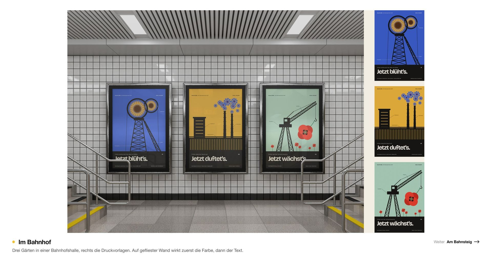
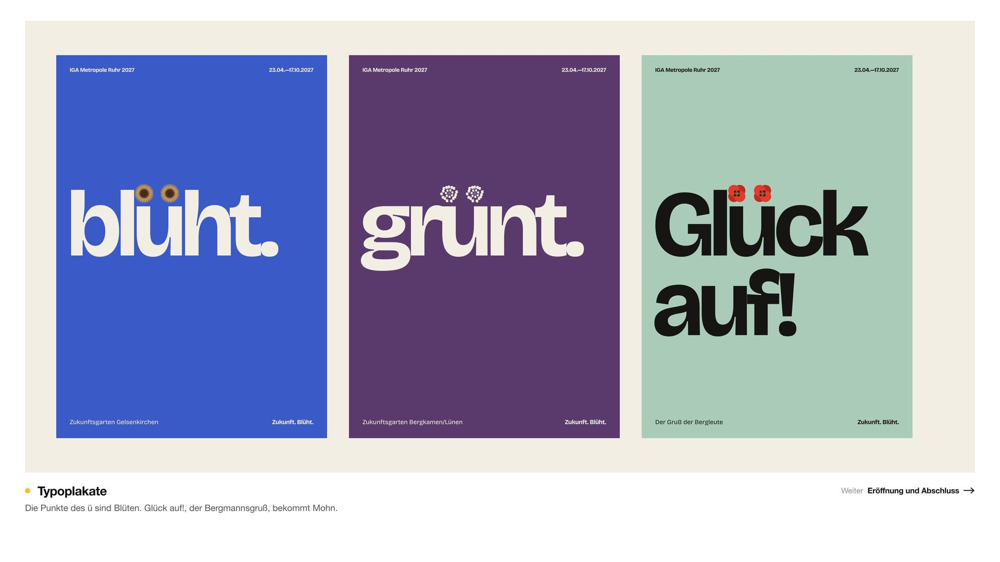
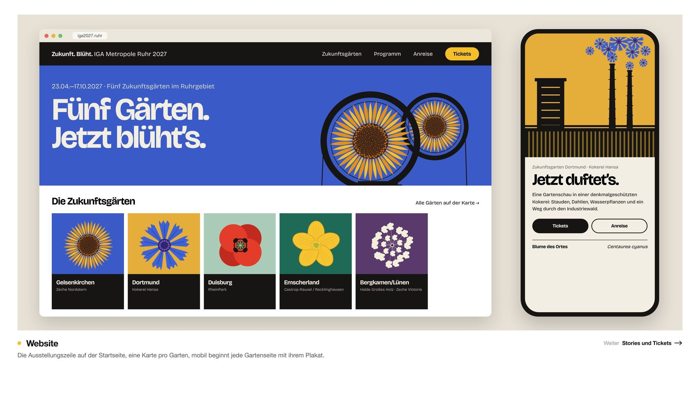
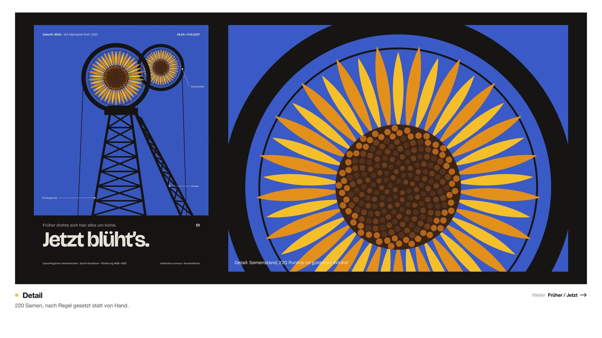
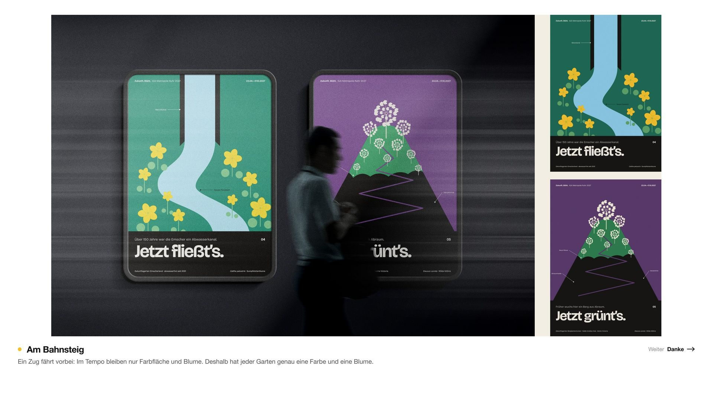
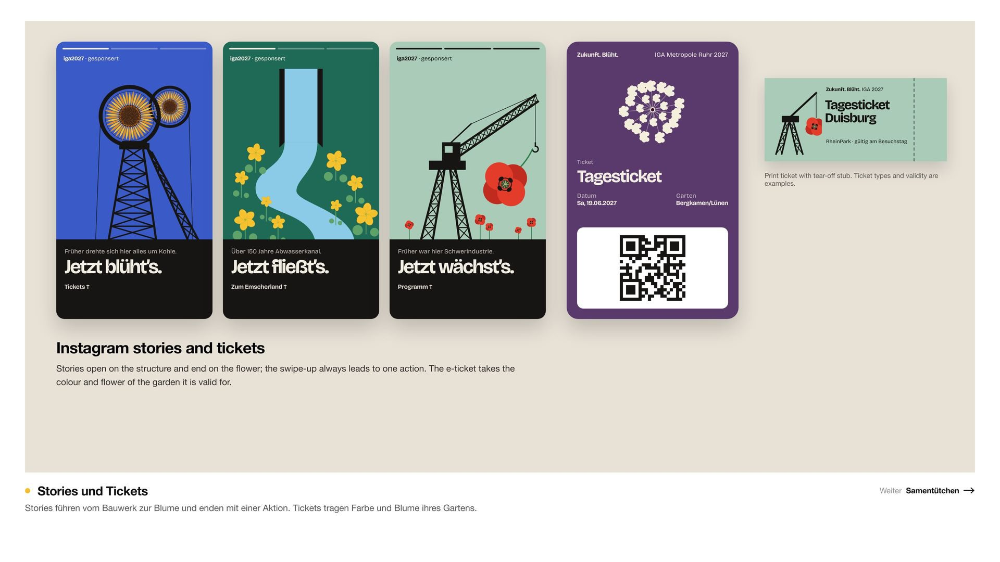
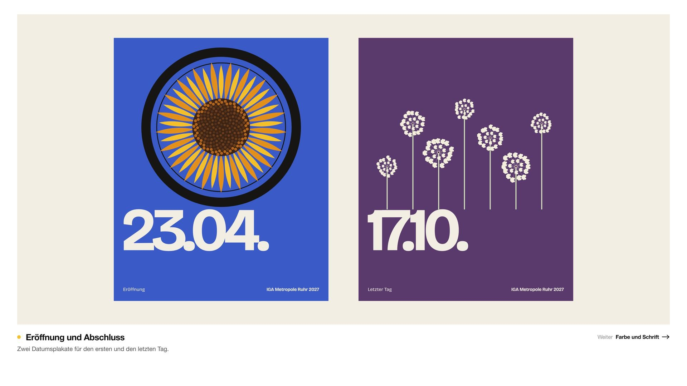
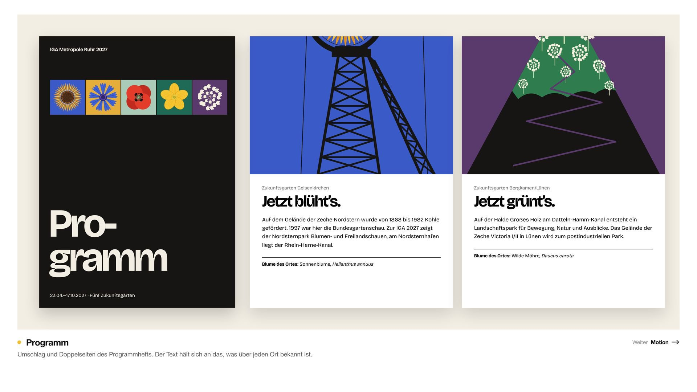
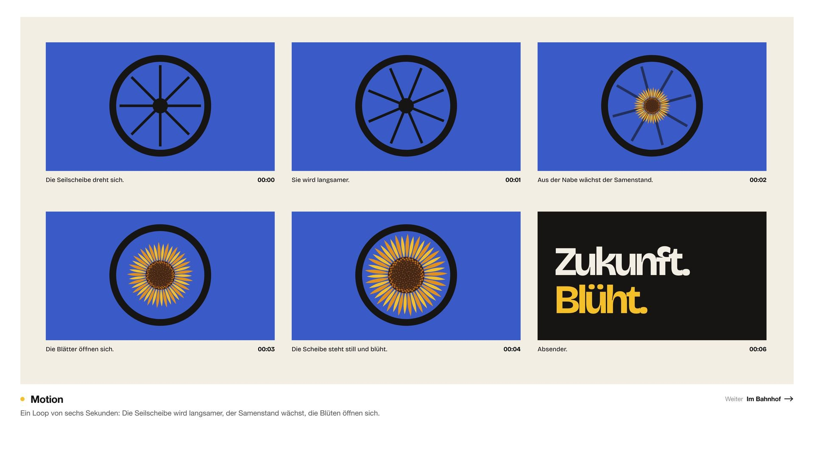

01 Case Study ansehen
Case Study ansehen
IGA 2027
Fünf Industrieorte, fünf Blumen, eine Kampagne — Plakate, Leitsystem und Film.
Konzept · Art Direction · Illustration · Motion · Eigenprojekt









1 / 3